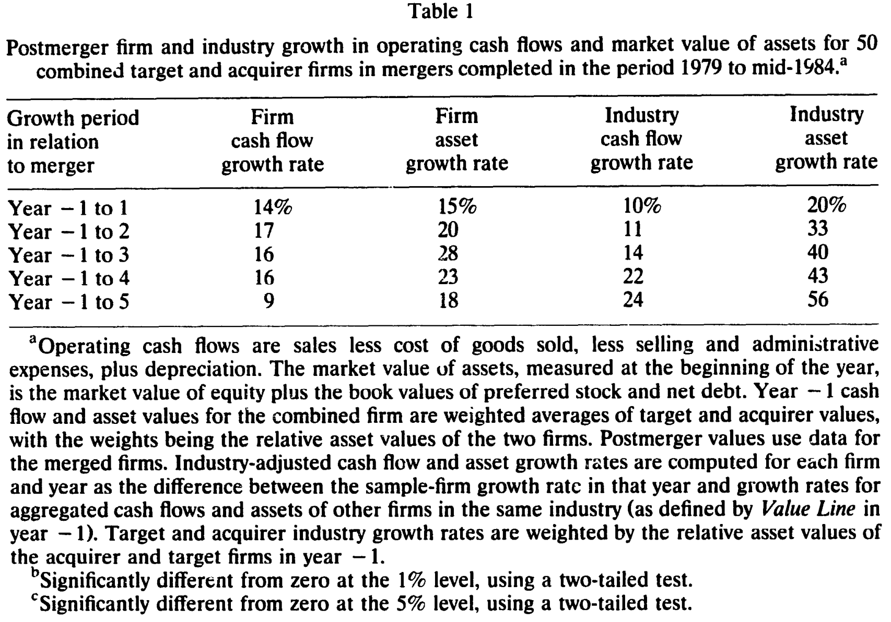
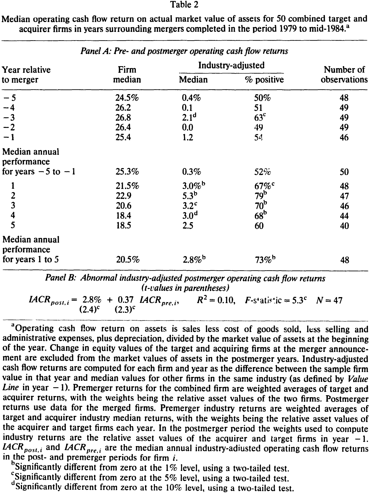
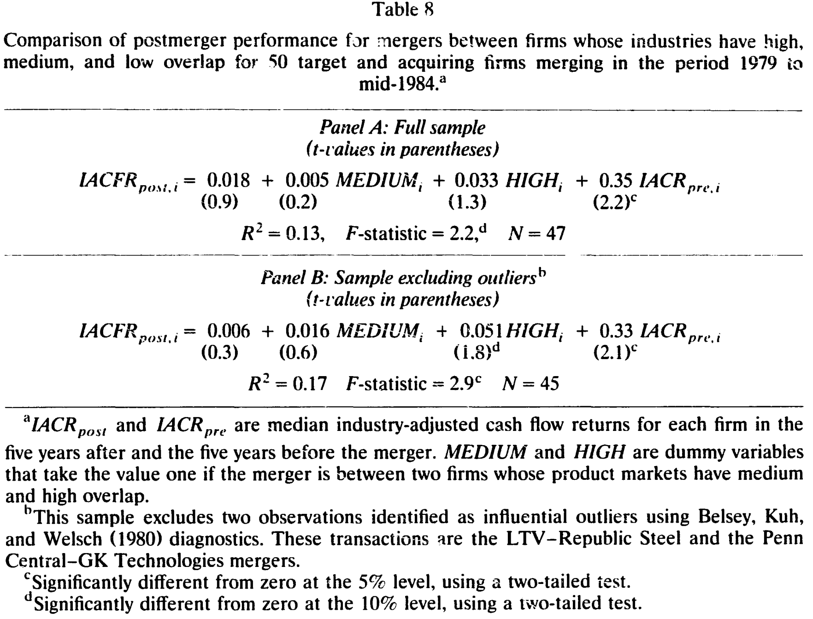
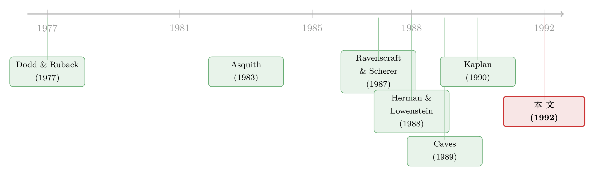

并购到底有没有创造价值？别问股价，去翻它们的现金流账本
本文读的是 Healy, Palepu & Ruback (1992, Journal of Financial Economics)：用 1979–1984 年间美国最大的 50 桩并购，作者绕开股价、直接去看公司合并后的营业现金流回报，发现并购后这些公司相对其所在行业的现金流回报率显著上升（年中位数高出行业约 2.8 个百分点，即比行业高出约 16%），而且这种改善来自资产生产率的提高，而非削减资本开支与研发；业务重叠度高的并购改善最明显；更关键的是，并购后的现金流改善与并购公告时的超额股票收益之间存在很强的正相关——市场当年给出的溢价，押的正是后来真实发生的经营改善。
1 一个永远说不清的问题
先抛一个看似已有定论、实则一直悬而未决的问题：并购，到底创造价值了吗？
如果你只看股价，答案似乎是肯定的。几乎没人怀疑目标公司的股东赚到了钱——他们卖股票时拿到了一笔溢价；收购方大体打平；把买卖双方的股权价值加总，并购之后是上升的。这是几十年事件研究 (event study) 反复确认的事实。
但问题恰恰出在这里。这部分上涨的股权价值，到底是从哪儿来的？
教科书会告诉你：来自某种「看不见」的真实经济收益，比如协同效应 (synergy)。可这只是一种解释。还有另一种同样自洽的解释：资本市场本身就不有效，并购只是凭空制造了一只被高估的证券，溢价是泡沫，不是价值。
这两种解释，在股价这个层面上是观测等价 (observationally equivalent) 的。
作者把这层困境讲得极其干净。人们曾试图用「失败的并购」来破解这个谜——既然成功的并购里真实收益和市场错误混在一起，那就去看那些谈崩了的：如果失败后目标公司股价跌回要约前的水平，到底说明了什么？答案是：什么也说明不了。股价跌回去，既可以解读为「丢掉了一份本可实现的真实收益的预期」，也可以解读为「丢掉了一份本可实现的错误定价的预期」。从股价的视角，对真实收益的预期，和市场的错误定价，是一回事。
这是全文的「原罪」：纯粹的股价研究，无论设计得多巧妙，都无法把「真实经济收益」从「市场无效」里分离出来。它甚至连一个更基础的问题都回答不了——这些收益从何而来？是来自经营协同、税收节约、从员工等利益相关者那里的转移，还是垄断租金？而这恰恰是并购公共政策辩论的核心：只有其中一部分来源，在社会层面是「无可争议地有益」的。
所以，要回答「并购有没有创造价值」，必须换一个证据来源。
2 换一把尺子：不看股价，看现金流
作者的做法朴素到近乎笨拙，却正因如此而有力：用并购后的会计数据，直接去检验经营业绩有没有变化。
但「直接看会计数据」这条路上埋满了地雷，前人正是栽在这些地雷上（详见下一节）。作者用整整一节，把这些地雷一个个拆掉。这一节才是这篇论文真正的技术贡献，值得逐层讲清楚。
第一颗地雷：会计方法。 在样本里，38 桩并购（76%）用购买法 (purchase method)，其余 12 桩用权益结合法 (pooling of interests)。购买法会把目标公司的资产负债按现行市值重估，把收购价超出可辨认净资产市值的部分记成商誉 (goodwill) 并摊销；权益结合法则什么都不重估。结果是：同一笔交易，购买法下报出来的利润更低——更高的折旧、更高的销货成本、还有商誉摊销。这种利润差异纯粹来自会计处理，与经济业绩无关。如果你天真地拿「并购前后的会计回报率」去比，对用购买法的公司，几乎注定会得出「业绩变差」的错觉。
第二颗地雷：融资方式。 样本里 30% 是股票交易，26% 用现金，剩下 14% 是现金、股票和其他证券的组合。如果用债务或现金融资，并购后利润会比用股票融资时更低——因为利润是扣掉利息费用之后、却在任何股权成本之前算出来的。融资选择的差异，又一次会污染「利润」这个指标。
作者一刀切开这两颗地雷的办法，是定义一个税前营业现金流 (operating cash flow) 指标：
$$ \text{Operating cash flow} = \text{Sales} - \text{COGS} - \text{SG\&A} + \text{Depreciation} + \text{Goodwill} $$
再用资产的市场价值（股权市值加净债务的账面值）去缩放它，得到一个可跨公司、跨时间比较的回报率：
$$ \text{Operating cash flow return} = \frac{\text{Operating cash flow}_t}{\text{Market value of assets}_{t-1}} $$
这个指标妙在哪？它在折旧、商誉、利息收支、税收之前——所以不受会计方法（购买 vs. 权益结合）影响，也不受融资方式（现金、债务、股权）影响。它衡量的是资产本身产生的经济收益。
作者还特意剔除并购当年（第 0 年）：因为购买法下，当年两家公司只从并购完成日起才合并报表，跨公司、跨行业都不可比；而且第 0 年掺杂了大量一次性并购成本。分析只用并购前的 −5 到 −1 年和并购后的 1 到 5 年。
3 全文最精巧的一步：把「溢价」从资产里挖出来
到这里，铺垫都已就绪。但真正关键的一步，藏在分母里。
设想你用上面的指标去测一家成功并购的公司，会发生什么？作者用一个干净到可以背下来的数值例子，把这件事讲透了。
假设收购方 A 每年永续产生 $20 营业现金流，目标 T 每年 $10。两家资本成本都是 10%，于是市值分别是 $200 和 $100。一个 A+T 的组合，市值 $300，现金流 $30，年回报正好 10%。
现在 A 收购了 T，合并后现金流上升到每年 $35——真实的 $5 改善。一个有效的市场会把这 $5 资本化为 $50 的价值增量。
陷阱来了。如果你按「并购后现金流 $35」除以「含溢价的并购后资产 $350」来算：
$$ \frac{\$35}{\$350} = 10\% $$
测出来的业绩和并购前一模一样——尽管现金流实实在在多了 $5！为什么？因为分母里的 $350 已经把那 $5 改善的资本化价值（$50）算进去了。市场在分子里给你的好消息，被它自己塞进分母里的溢价对冲掉了。
作者的修正，是把这笔并购公告时的股权重估 (revaluation) 从资产基数里挖出去：
$$ \frac{\$35}{\$350 - \$50} = \frac{\$35}{\$300} = 11.7\% $$
这个 11.7% 才正确反映了并购后的经营改善。
这一步看似只是一个分母上的小手术，却是整篇论文成立的前提。具体操作上，他们把目标和收购方在并购公告时的股权价值变化，从并购后各年的资产基数中扣除（目标的股权价值变化从首次要约前 5 天量到退市，收购方同理）。在一个有效市场里，这部分重估正是「对未来经营改善的资本化预期」——把它留在分母里，你就永远测不出改善，哪怕改善真的发生了。
顺带一提，这个「分母里的溢价会吃掉分子里的改善」的逻辑，与后来许多关于并购收益度量的争论遥相呼应（关于「平均数」如何藏住规模效应的另一种偏误，可参见《赚了 1.1%，却亏掉 3030 亿：并购里那个被「平均」藏起来的规模效应》）。
4 还得有一把「基准」尺子
测出了一个回报率，还不够。任何一年的现金流回报，都会被全经济、行业的大势裹挟，也会被公司并购前自身的业绩惯性带着走。
作者的基准设计是两层的。
第一层：行业调整。 把每家样本公司每年的现金流回报，减去其所在行业（按 Value Line 行业定义）的中位数，得到行业调整后的回报。计算行业中位数时剔除样本公司自身。并购前的行业值，按目标与收购方的相对资产规模加权两个行业；并购后各年，统一按并购前一年的相对规模加权。这样就把「经济大势」和「行业大势」滤掉了。
第二层：剔除业绩惯性。 仅仅行业调整还不够——也许这些公司本来就比同行强。所以作者把异常行业调整业绩定义为如下横截面回归的截距：
这里 IACFR_post 与 IACFR_pre 分别是每家公司并购后五年与并购前五年的行业调整现金流回报中位数。作者讲得很清楚：如果并购前后的行业调整回报之间没有关系（γ₁ 不显著），那么并购后行业调整回报的恰当基准就是零；否则基准应是并购前的水平按惯性外推的值。这一步，把「这家公司本来就比同行好」这个最致命的反事实，钉死在了回归的斜率项里。
5 主要结果：现金流回报，真的涨了
铺垫了三节，结果其实可以一句话说完：并购后，这些公司相对其行业的营业现金流回报显著上升，而且改善来自资产生产率，不靠砍长期投资。 但量级值得逐一看。
先看一个容易误导的表象。 表 1 报告并购后第 1 到 5 年相对并购前一年的增长。合并公司的现金流中位数增长 14%（第 1 年）、17%（第 2 年）、16%（第 3、4 年）、9%（第 5 年）。乍看是好消息。但资产也在涨：15%、20%、28%、23%、18%。资产涨得比现金流还快——这正说明，为什么不能只看「现金流涨了多少」，必须用回报率。

Table 1
于是看原始回报率，你会得出错误结论。 表 2 的 Panel A 里，并购前五年税前营业回报中位数在 24.5% 到 26.8% 之间，年中位数 25.3%；并购后反而下降到 18.4%–22.9%，年中位数 20.5%。如果到此为止，你会断言「并购让业绩变差了」——这正是某些前人的结论。
但真正关键的一步，是行业调整。 同期这些公司所在的行业，现金流回报本身也在下行。把行业那一块减掉之后，符号反转了：行业调整后的营业回报中位数为 3.0%（第 1 年）、5.3%（第 2 年）、3.2%（第 3 年）、3.0%（第 4 年），全部显著异于零；第 5 年仍高于行业，但不显著。回报为正的公司占比是 67%、79%、70%、68%，全都远高于纯靠运气的 50%。整个并购后五年，样本公司的年中位数回报比行业高 2.8 个百分点，约合比行业高出 16%。

Table 2
改善从哪儿来？ 作者进一步拆解，发现这些改善来自资产生产率 (asset productivity) 的提高，而不是寅吃卯粮。一个常见的担忧是：并购后业绩变好，是不是靠砍资本开支和研发、牺牲长期生存能力换来的？数据说不是——样本公司在并购后，相对其行业维持了资本开支率与研发率。改善是真的，且不以未来为代价。
这一点，把作者的结论和前人正面顶了起来：Ravenscraft and Scherer (1987) 与 Herman and Lowenstein (1988) 检验并购后的盈余业绩，得出「并购公司没有经营改善」的结论。作者用现金流、用行业基准、用剔除溢价的分母，得到了相反的答案。
6 反转之后：是「重叠」，不是「方式」
到这里，故事似乎可以收尾了。但作者多走了一步，去问：什么样的并购改善最大？
直觉里，并购成败的「常识」清单很长：用什么方式融资（现金/股票/混合）、是敌意还是善意、目标公司有多大……作者把这些一个个拖上检验台，结论却近乎扫兴：几乎都不显著。
- 融资方式：股权、现金、混合证券之间，并购后现金流业绩没有显著差异；与并购相关的合并公司超额股票收益也与融资方式无关。
- 敌意 vs. 善意：用《华尔街日报》对首次要约的报道分类（敌意、善意、白衣骑士、不确定），各类之间没有差异。
- 交易规模：用目标资产的对数、以及目标资产/收购方资产之比（均取并购前一年），都不能解释横截面差异。
唯一留下来的，是业务重叠度 (business overlap)。作者主观地把每桩并购按目标与收购方业务的重叠程度分成高、中、低三档，做横截面回归（表 8）：
$$ IACFR_{post,i} = 0.018 + 0.005\,\mathrm{MEDIUM}_i + 0.033\,\mathrm{HIGH}_i + 0.35\,IACFR_{pre,i} $$
括号里的 t 值分别是 0.9、0.2、1.3、2.2，R² = 0.13，F = 2.2，N = 47。剔除两个有影响力的离群点（用 Belsey, Kuh, and Welsch (1980) 诊断识别出的 LTV–Republic Steel 与 Penn Central–GK Technologies）后：
$$ IACFR_{post,i} = 0.006 + 0.016\,\mathrm{MEDIUM}_i + 0.051\,\mathrm{HIGH}_i + 0.33\,IACFR_{pre,i} $$
t 值为 0.3、0.6、1.7、2.1，R² = 0.17，F = 2.9，N = 45。高重叠 (HIGH) 这一档，在剔除离群点后达到 10% 显著——业务高度重叠的并购，并购后业绩比其他并购更好。

Table 8
注意斜率项 IACFR_pre 的系数（0.35/0.33）都显著为正：并购前业绩好的公司，并购后业绩也偏好。这正是第 4 节那把「剔除业绩惯性」尺子要对付的东西——而即便扣掉它，高重叠并购的改善依然冒了出来。
「业务越像、改善越大」这条线索，与后来一系列「横向并购为什么创造价值」的研究一脉相承（关于横向并购究竟是做大蛋糕还是抢同行饭碗，可参见《并购是为了把饼做大，还是把价抬高？——答案藏在「产品像不像」里》）。
7 最后一块拼图：把现金流接回股价
现在回到开篇那个「原罪」。作者绕开股价，是为了独立测出真实的经营改善。但如果他们就此打住，会留下一个新的怀疑：会计上测出的这点改善，跟当年市场给的溢价，是同一回事吗？还是两个互不相干的现象？
第 4 节给出了答案，也正是全文最漂亮的闭环：并购后营业现金流回报的改善，能解释并购公告时合并公司股权价值上升的相当一部分——两者之间存在很强的正相关。
这一步把整篇论文从「会计实证」抬升成了对市场有效性的一次正面回应：市场在并购公告日给出的那份溢价，押的不是空气，而是后来真实发生的经营改善。换句话说，开篇那个「真实收益 vs. 市场无效」的死结，作者用「现金流改善 ↔ 公告超额收益」这条桥，把天平明确地拨向了「真实收益」一侧。
也正因为如此，作者把「整合会计数据与股票收益数据」当成本文的方法论遗产之一——后来一批研究沿用了这套思路，比如 Tehranian and Cornett (1991) 与 Linder and Crane (1991) 分析银行并购、Jarrell (1991) 用分析师对销售利润率的预测来看并购后业绩。这一脉中最直接的延续，是作者团队后来对银行并购「收益从何而来」的追问（可参见《并购到底创没创造价值？——把老板心里那本账翻给你看》，以及银行并购会计业绩的相关证据《并购真能让银行变好吗？——一笔用「会计账本」算出来的合并红利》）。
8 文献脉络
把这条线索拉直来看，会更清楚这篇论文站在哪儿。
最早的一脉是股价事件研究。 Dodd and Ruback (1977)、Asquith (1983)、Bradley, Desai, and Kim (1983)、Ruback (1988) 等一系列工作，奠定了「目标股东获利、收购方打平、合并价值上升」的事实，也包括用「失败并购」做的巧妙尝试。但正如开篇所述，这条路在「真实收益 vs. 市场无效」面前，撞上了观测等价的天花板。
第二脉转向会计/盈余业绩，却得出了悲观结论。 Ravenscraft and Scherer (1987) 用 FTC 业务条线数据看并购后盈余，Herman and Lowenstein (1988) 用敌意并购样本看 ROE，都倾向于「并购没有带来经营改善」。但作者指出它们各有硬伤：前者的并购后年份与并购事件不对齐、且只看被并购的业务条线、又依赖会计裁量空间很大的 FTC 数据；后者的 ROE 没有控制购买/权益结合会计、融资方式与共同行业冲击。Caves (1989) 对这一波「事后业绩」研究做过综述。与此并行，Bull (1988)、Kaplan (1990)、Smith (1990) 在管理层收购 (MBO) 的盈余业绩上做了类似工作。

本文 (1992) 处在这条脉络的「方法论转折点」上：它既不满足于股价的观测等价困境，也修好了会计路线上的全部已知漏洞——用现金流而非盈余、用市值而非账面、剔除溢价、用行业基准、再用回归截距剔除惯性，最后把现金流改善接回公告超额收益。它给出的，是这条三十年研究脉络里第一份「并购确有真实经营改善、且市场当年就看对了」的干净证据。
评论与延伸（Q&A + 研究方向）
(a) 几个可能的疑问
Q：为什么非要用现金流，而不用大家更熟悉的会计利润（盈余）？
因为盈余被两件与经济业绩无关的事严重污染：会计方法（购买法 vs. 权益结合法的折旧、商誉差异）和融资方式（利息费用扣减）。营业现金流定义在折旧、商誉、利息、税收之前，对这两者免疫。前人正是栽在用盈余/ROE 上，才得出「并购没改善」的相反结论。
Q：「把并购溢价从资产基数里挖掉」这一步，会不会是作者在『制造』正结果？
这是最值得警惕的一点，但逻辑上站得住：在有效市场里，公告溢价恰恰是对未来现金流改善的资本化。若把它留在分母里，分子的改善会被自己资本化的价值精确对冲掉（数值例子里
$35/$350=10%，等于并购前），于是无论真实改善多大，你都测不出来。挖掉它（$35/$300=11.7%）才能让指标对改善有反应。真正的隐忧反而是反向的——若市场对改善过度乐观，溢价偏高，挖掉后反而可能高估改善（见下一问）。
Q：用资产的「市场价值」做分母，会不会引入反馈偏误？
会有这个担忧：意外的现金流实现会改变市场对未来现金流的预期，从而改变市值（分母）。作者承认这是市值法的潜在局限，但在第 3.2 节的敏感性检验里，没有发现这种反馈效应的证据。
Q：行业调整后回报为正，是不是「强者恒强」而非并购效应？
这正是基准设计要对付的。作者把异常业绩定义为「并购后行业调整回报对并购前行业调整回报回归」的截距，从而剔除并购前的业绩惯性。回归里斜率项（
≈0.33–0.35）确实显著为正，说明惯性真实存在；但即便扣掉它，截距/高重叠效应仍然冒出来。
Q：业务重叠度是作者「主观」分类的，这个结论可信吗？
这是该结论最大的软肋。重叠度是作者基于 Value Line 业务描述的主观判断，且高重叠效应只在剔除两个离群点后达到 10% 显著（全样本里不显著）。作者本人也很克制，称对「并购后业绩决定因素」的分析是初步的 (preliminary)——全文设计的核心目标是「业绩到底有没有改善」，而非「为什么改善」。
Q：50 桩最大并购的样本，结论能外推到一般并购吗？
不能直接外推。作者刻意选最大的 50 桩，是为了让数据可手工收集、让真实收益（若有）更容易被检测到、并减少混淆事件。代价是样本小、且偏向超大交易。作者甚至直言，鉴于并购动机的复杂与异质，大样本研究对「影响并购结果的因素」能提供的新洞见有限，更看好对少数并购做深入的临床研究 (clinical studies)。
(b) 几个可能的研究问题与提案
1. 把同一套「剔除溢价 + 行业基准」的现金流方法搬到公司债/信用市场。
【经济故事】并购后的经营现金流改善，应当首先惠及债权人（违约风险下降），但股权事件研究只盯着股东。如果并购确实提升了资产生产率，合并后债券利差是否收窄？这能把 HPR 的「真实改善」论断在信用市场里再验证一次。 【可行性】高。用 TRACE 公司债成交数据 + Compustat 现金流，事件窗取并购完成前后，看合并实体债券利差相对评级/久期匹配组合的变化。识别上可借鉴 HPR 的行业基准思路，挑战在于并购常伴随资本结构变化，需要分离「杠杆效应」与「经营改善效应」。
2. 外资收购方 vs. 本土收购方：经营改善有差异吗？
【经济故事】HPR 把非美国收购方剔除了（数据不可得）。但外资并购是否带来不同的资产生产率改善——技术转移？还是「水土不服」？这关系到对跨境并购的政策态度。 【可行性】中。需要跨境并购样本 + 目标公司并购后可得的经营数据（在母公司合并报表里往往被淹没，这是 HPR 当年剔除外资的原因）。可行的折中是用业务条线/分部数据，或聚焦目标仍单独披露的案例，识别会较弱。
3. 现金流改善的「来源分解」：是协同，还是从利益相关者的转移？
【经济故事】HPR 明确指出，并购收益可能来自经营协同、税收节约、从员工等利益相关者的转移、或垄断租金，而只有部分来源在社会层面有益——但本文没有分解。把现金流改善拆成「单位成本下降（效率）」「裁员/降薪（转移）」「提价（市场势力）」三块，才能回答政策真正关心的问题。 【可行性】中。效率与提价可用产品层面价格/产量数据（部分行业可得），转移需匹配工资/雇佣数据（如 LBD、税务记录）。识别难点是三者同时发生、相互纠缠，可能需要按行业重叠度/集中度做异质性切分。
4. 把「分母里的溢价」问题，正式建成一个度量偏误的统计框架。
【经济故事】HPR 的数值例子直觉清晰，但「该挖掉多少溢价」依赖市场有效假设。若市场对改善的预期有偏（过度乐观/悲观），挖掉的量就错了，业绩度量随之有偏。能否构造一个对市场预期偏误稳健的现金流业绩估计量？ 【可行性】中偏低。属于方法论论文，需要对市场预期偏误建模并做蒙特卡洛，再用真实并购样本做敏感性。doable，但贡献偏「锦上添花」，发表门槛在于能否给出可操作、且实证上确有差别的修正。
参考文献
- Asquith, P. (1983). Merger bids, uncertainty, and stockholder returns. Journal of Financial Economics 11(1–4), 51–83.
- Bradley, M., Desai, A., & Kim, E. H. (1983). The rationale behind interfirm tender offers: Information or synergy? Journal of Financial Economics 11(1–4), 183–206.
- Caves, R. E. (1989). Mergers, takeovers, and economic efficiency: Foresight vs. hindsight. International Journal of Industrial Organization 7(1), 151–174.
- Dodd, P., & Ruback, R. (1977). Tender offers and stockholder returns: An empirical analysis. Journal of Financial Economics 5(3), 351–373.
- Healy, P. M., Palepu, K. G., & Ruback, R. S. (1992). Does corporate performance improve after mergers? Journal of Financial Economics 31(2), 135–175.
- Herman, E., & Lowenstein, L. (1988). The efficiency effects of hostile takeovers. In J. Coffee, L. Lowenstein, & S. Rose-Ackerman (Eds.), Knights, Raiders, and Targets. Oxford University Press.
- Kaplan, S. (1990). The effects of management buyouts on operating performance and value. Journal of Financial Economics 24(2), 217–254.
- Ravenscraft, D. J., & Scherer, F. M. (1987). Mergers, Sell-offs, and Economic Efficiency. The Brookings Institution.
- Ruback, R. S. (1988). Do target shareholders lose in unsuccessful control contests? In A. Auerbach (Ed.), Corporate Takeovers: Causes and Consequences. University of Chicago Press.